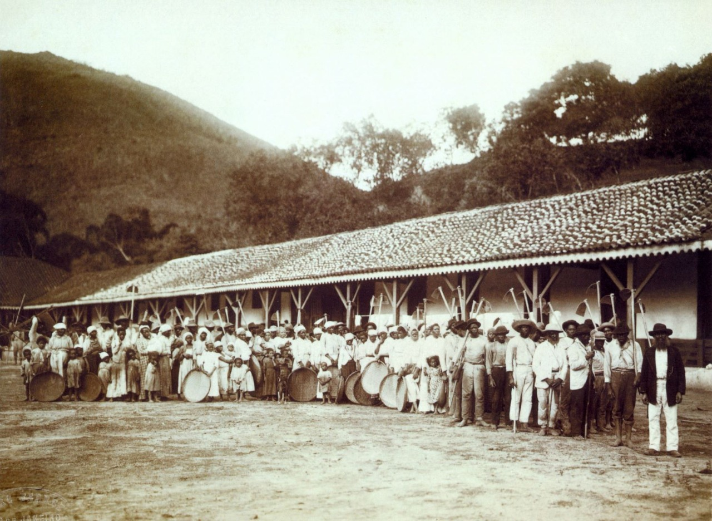

O começo

De origem indígena, o nome Pirituba vem da junção das sílabas “piri” (referente a taboa, uma vegetação de brejo em abundância na região) e “tuba” (nome aumentativo entre os índios que significa “muito”). Local que nasceu no século XIX, hoje abriga três distritos: Pirituba, Jaraguá e São Domingos.. Em 1 de fevereiro, comemoram-se os 137 anos do bairro, um dos mais icônicos no desenvolvimento da metrópole. Saiba mais clicando aqui
Fundador

Pirituba nasceu a partir de uma fazenda adquirida pelo coronel Anastácio de Freitas, que veio a ser adquirida pelo brigadeiro Rafael Tobias de Aguiar e a Marquesa de Santos. Em 1917 a fazenda foi adquirida pela Companhia Armour, e a área destinada à criação de gado de corte foi dada à Cia. City, que urbanizou esta região. Atualmente, é um dos pólos industriais da cidade, com várias indústrias instaladas e residências diversas (com grande aumento de edifícios, além da retirada total de favelas na região e deslocamento para os CDHUs de outros bairros).
Referências
Objetivo do site
Esse site tem como objetivo facilitar o
conhecimento agrupado do bairro de Pirituba, e tornar esse agrupamento de informações acessíveis para as pessoas
Ⓡ Samuel Max. Todos os direitos reservados
Samuel Max O. Silva

max.xpn

im.smax